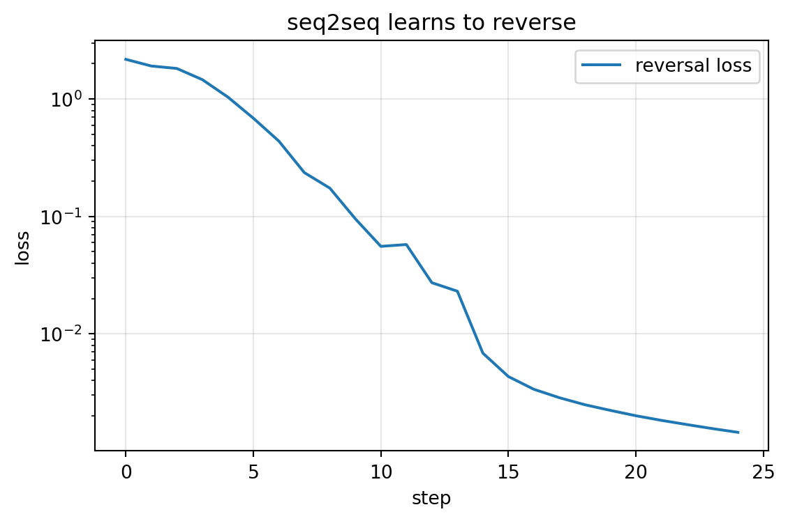

import numpy as npfrom dlbook.data.corpus import make_reversal_taskfrom dlbook.rnn import Seq2Seqfrom dlbook.utils import plot_loss_curves, set_seedset_seed(42)inputs, targets = make_reversal_task(n=400, max_len=5, seed=0) # 训练: 长度 3–5val_in, val_tg = make_reversal_task(n=200, max_len=5, seed=1)model = Seq2Seq(12, hidden=64, seed=0)losses = []for epoch inrange(25): total =0.0 order = np.random.default_rng(epoch).permutation(len(inputs))for i in order: total += model.loss_and_backward(inputs[i], targets[i]) model.step(0.05) losses.append(total /len(inputs))plot_loss_curves({"reversal loss": losses}, title="seq2seq learns to reverse");

def exact_acc(model, pairs): ok =sum(model.greedy_decode(i) == t for i, t in pairs)return ok /len(pairs)print(f"验证集（长度 3–5）精确匹配: {exact_acc(model, list(zip(val_in, val_tg))):.3f}")print("示例:", model.greedy_decode(val_in[0]), "目标:", val_tg[0])
model_rev = Seq2Seq(12, hidden=64, seed=0)for epoch inrange(25): order = np.random.default_rng(epoch).permutation(len(inputs))for i in order: model_rev.loss_and_backward(inputs[i][::-1], targets[i]) # 源句倒序 model_rev.step(0.05)print("倒序输入版的外推曲线:")for L in (5, 6, 7, 8):# 编码同样要倒序喂 pairs = [(i[::-1], t) for i, t in pairs_of_length(L)]print(f" 长度 {L}: {exact_acc(model_rev, pairs):.3f}")
历史注：配套读 Cho et al. (2014) (Cho et al. 2014)（同期编码-解码 + GRU，从机器翻译的需求出发）。两篇同期同构，是”想法的空气中到期”的典型案例；以及 Bahdanau et al. (2015) (Bahdanau et al. 2015)。它是对本章瓶颈的直接回应，也就是下一章的开场论文。
Bahdanau, Dzmitry, Kyunghyun Cho, and Yoshua Bengio. 2015. “Neural Machine Translation by Jointly Learning to Align and Translate.”ICLR.
Cho, Kyunghyun, Bart van Merriënboer, Caglar Gulcehre, et al. 2014. “Learning Phrase Representations Using RNN Encoder-Decoder for Statistical Machine Translation.”EMNLP.
He, Kaiming, Xiangyu Zhang, Shaoqing Ren, and Jian Sun. 2015. “Deep Residual Learning for Image Recognition.”arXiv Preprint arXiv:1512.03385.
Rafailov, Rafael, Archit Sharma, Eric Mitchell, Christopher D. Manning, Stefano Ermon, and Chelsea Finn. 2023. “Direct Preference Optimization: Your Language Model Is Secretly a Reward Model.”NeurIPS.
Sutskever, Ilya, Oriol Vinyals, and Quoc V. Le. 2014. “Sequence to Sequence Learning with Neural Networks.”NeurIPS.